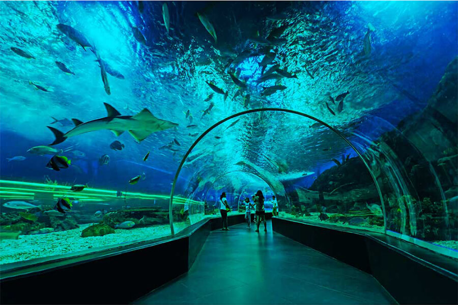

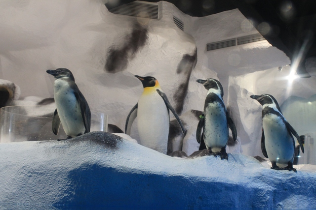
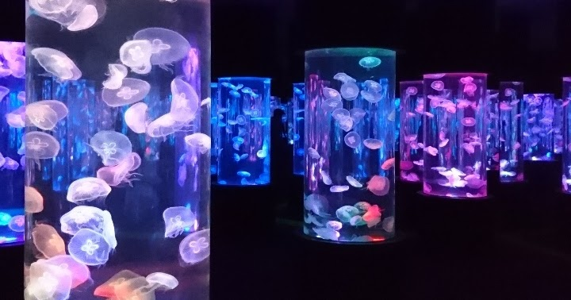
Manila Ocean Park is a prominent marine-themed park and educational facility located behind the Quirino Grandstand in Ermita, Manila. It serves as a major tourist destination that combines entertainment with marine life conservation and education.
Theme Parks, Nature Reserves, Parks & Gardens, Museums & Galleries
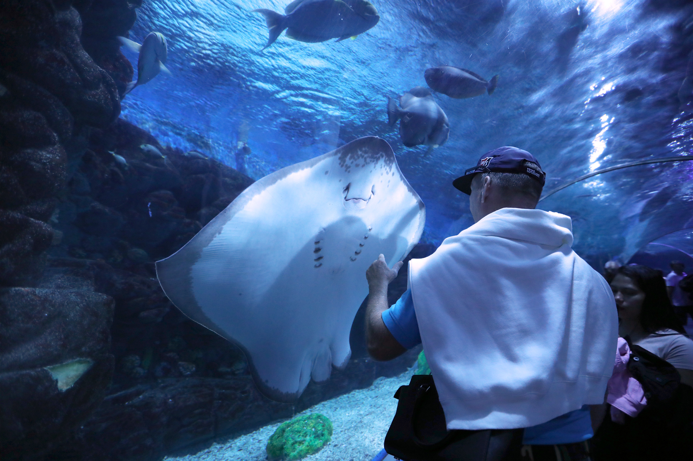
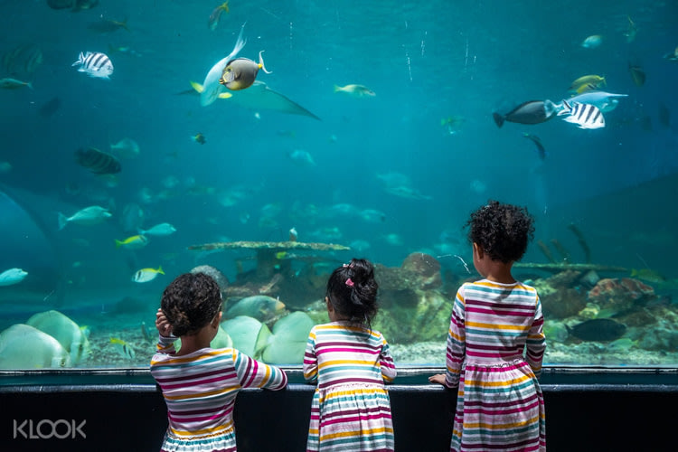

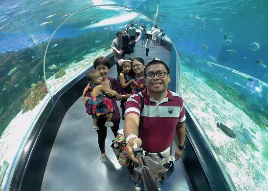
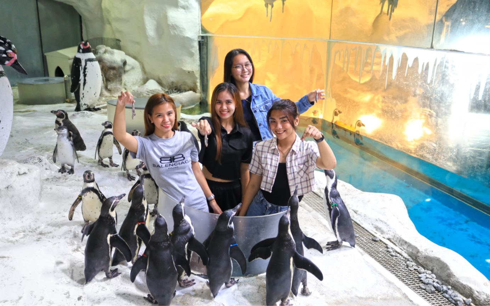
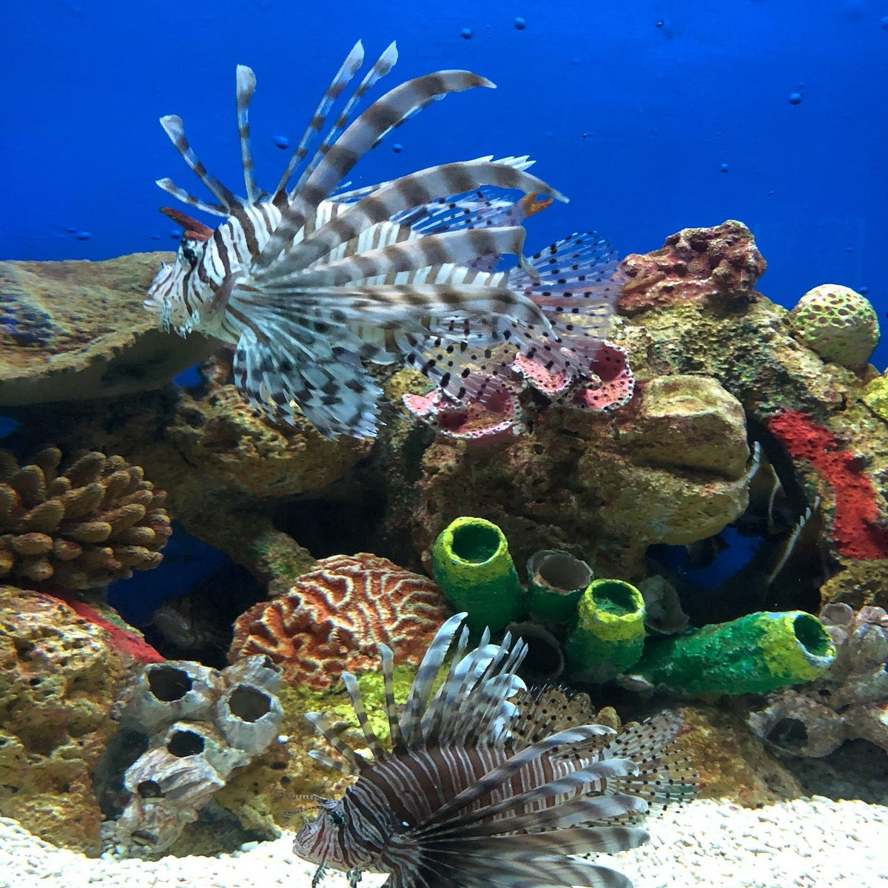
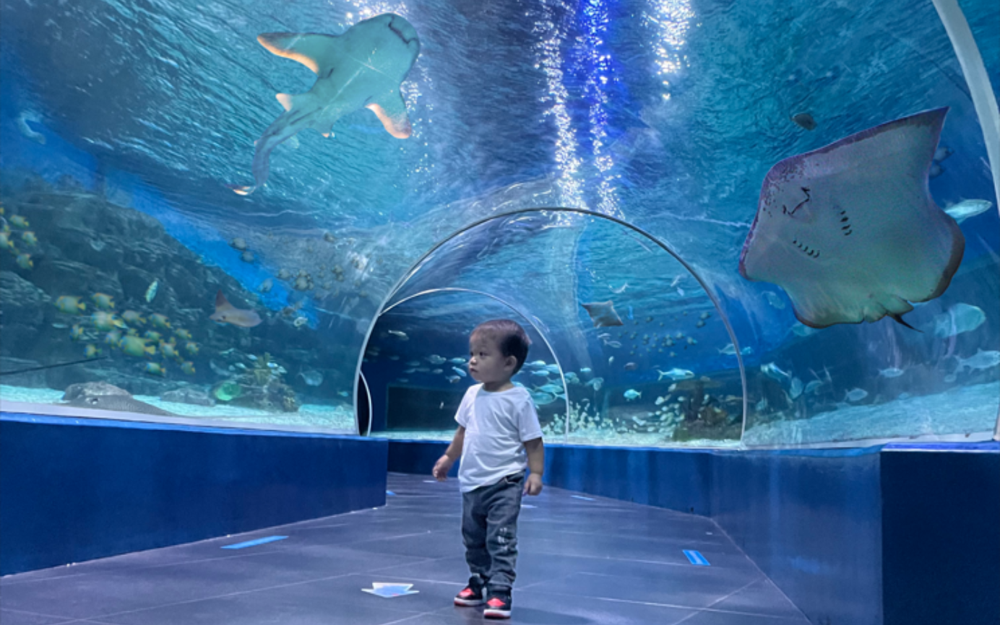
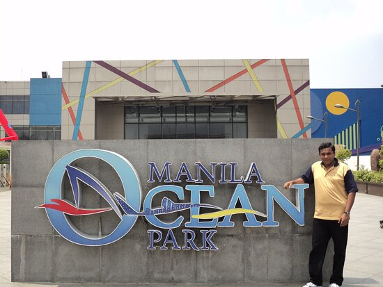
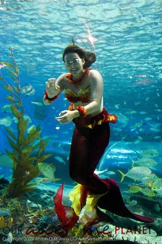
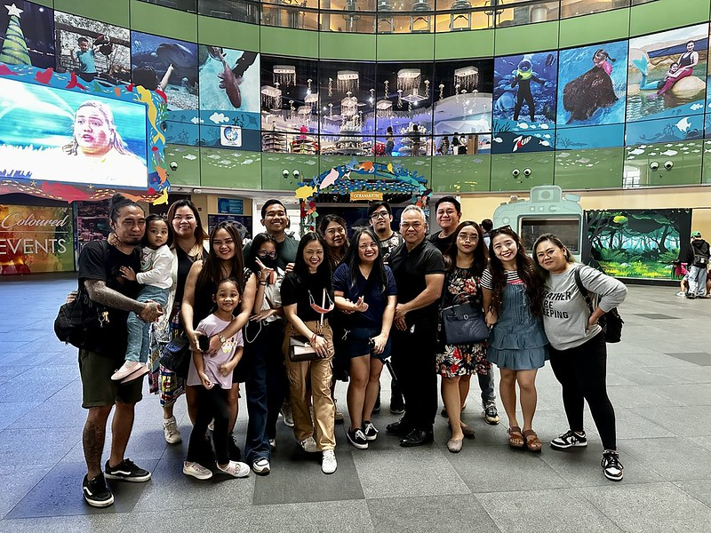
Want to contribute to the collection?